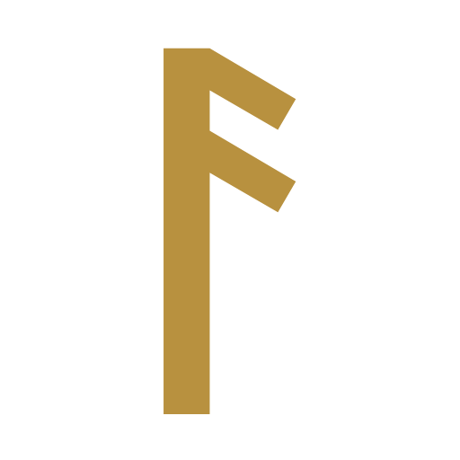
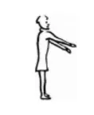

Rune Grimoire
 Ansuz
Ansuz
Modern Relevance
Ansuz connects to the divine and Loki, the trickster. As a messenger rune, it signals unexpected texts or intuitive hits. Ansuz advises alertness and careful attention to all forms of communication.
Tree, Element, and Deity
Tree: ash
Element: air
Deity: Odin
Meaning: Yggdrasil; the primal sound, Aum
Names Across Dialects
| Dialect | Word | Meaning |
|---|---|---|
| Proto-Germanic | ansuz | A god, ancestral god |
| Gothic | ansus | A runic god name |
| Old English | ós | A god |
| Old Norse | áss | A god, one of the Æsir |
| Icelandic | Óss, Áss | A god |
| Norwegian | As | A god |
Phonetic value: a (o in the Anglo-Saxon row)
Esoteric interpretation: Odin of the Æsir
Ideographic interpretation: the wind-blown cloak of Odin
Cosmological Lore
Ansuz is the mysterium tremendum of the rune row. The A-rune is instrumental in the creation of humankind. It describes two of the spiritual gifts given to Askr and Embla (the primal man and woman) by the threefold aspect of Odin (appearing as Odin, Hoenir, and Lodhurr). These gifts were ond or anda (breath, spirit, the animating life principle) and odhr (inspired mental activity, inspiration). This is the stave of Odin as the numinous god of magick and ecstasy.
The Ecology of Spiritual Power
Ansuz is the receiver, container, transformer, and expresser of spiritual power and numinous knowledge. This force is received from the Æsir and transformed within humanity to be re-expressed toward the multiverse in magickal and religious acts. This ecology of power works in tandem with Odin reception of rune wisdom and subsequent expression of that wisdom to mortals.
The A-rune encompasses the medium through which numinous knowledge is received, the container of that power, and the force itself, which manifests as the ecstatic state. This container-contained equation is common for symbols of inspired or ecstatic states. In Norse mythology, the poetic mead of inspiration and the vessel in which it is held are both known by the name Othroerir ("the exciter of inspiration"). This is the ecstasy that leads to the formation of a body of lore and wisdom.
Word, Song, and Galdr
Ansuz is the rune of the word, song, poetry, and magickal incantation (galdr) as both a container and expresser of magickal force.
Ancestral Power and the Death Mysteries
Ansuz is a magickal ancestral power handed down from generation to generation along genetic lines. The ancient Germanic peoples understood themselves to be descended from their gods, as the genealogies of their kings, heroes, and clan chieftains attest. The power link between gods and mortals was, for them, unbroken, and it remains so. Through this rune, the realization of the bond between the ancestral gods and their people may be regained. This is an ecstatic concept that complements the more stable, institutional force of Othala.
The A-rune embodies the death mysteries of the Æsir.
Rune Character
Rune of the power of speech that destroys tyranny: "Your spiritual force sets you free." Order, the opposite of chaos. Creative inspiration, magickal oratory ability, and the power to persuade others and audiences through speech. Opens channels of self-expression and overcomes obstacles of every kind. Used in removing bindings. Assists in enhancing one's psychic and magickal abilities. Also used for work in invocations.
Crystal Pairings
- Lapis Lazuli used with this rune aids in working to communicate with demons
Keywords
- Reception, transformation, expression
- Container/contained
- Numinous knowledge
- Inspiration
- Ecstasy
- Word-song
- Death mysteries
Galdr
ansuz ansuz ansuz
aaaaaasssss
aaaaaaaaaa
Stadha
Stand upright. Stretch both arms out parallel, pointing them down slightly, with the left arm lower than the right. Face north or east.

Constructive Applications
Creative inspiration, magickal oratory ability, and persuasion. Opens channels of self-expression and overcomes obstacles of every kind. Used in removing bindings. Enhances psychic and magickal abilities. Also used for invocations.
Magickal Workings
- Increase of both active and passive magickal powers and clairvoyant abilities
- Convincing and magnetic speech, and the power of suggestion and hypnosis
- Acquisition of creative wisdom, inspiration, ecstasy, and divine communication
- Banishing of death and terror through knowledge of Odin
Stadhagaldr Rites
Increase in Magickal Power
Ansuz streams Odin's might into the vitki during this rite:
The might of Odhinn streams to me.
See Stadhagaldr (Posture Magick) for the full rite.